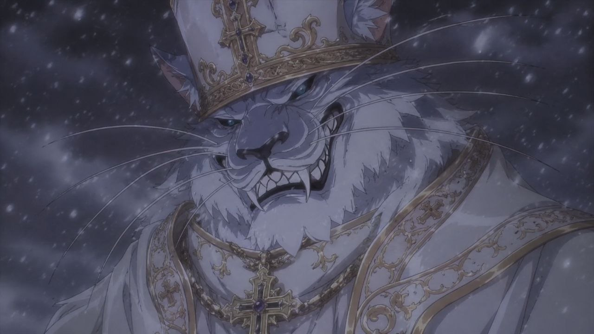

Настоящая анкета посвящена Отцу Сиду — Понтифику угасшего тайного ордена. Существо, рождённое не эволюцией, а разумным замыслом, обладает биологией, бросающей вызов всем законам природы. За два с половиной столетия жизни он возглавлял орден, нёс свет просвещения сквозь тьму невежества — и пережил его полное уничтожение.
Ныне Его Святейшество пребывает в новом, незнакомом мире, неизменно сохраняя достоинство, мудрость и острый взгляд сквозь переменчивые века истории. Материал содержит сведения о биографии, характере, внешности, физиологии, бытовых навыках и магических способностях персонажа.
Рождённый разумным замыслом, а не слепой эволюцией, Сид с первых дней стал существом, чуждым всей биосфере. Биология его настолько отлична от любой известной жизни, что сама природа не признавала его частью своего порядка. Однако он не стал диким хищником — ведь не унаследовал врождённых инстинктов, свойственных кошачьим.
Наделённый от рождения острым разумом и жаждой познания, юный Сид был принят в высший круг тайного ордена. Невзирая на не-гуманоидную природу, он превосходил своих братьев-людей мудростью и глубиной суждений.
Посвятив всего себя служению высшим силам, Сид был удостоен чести стать Понтификом — высшим духовным главой ордена. Многие десятилетия он возглавлял культ, задавая курс на просвещение и умножение познаний во всех сферах: богословии, науке, лингвистике, тайных искусствах.
Великая библиотека ордена, возведённая под его руководством, хранила рукописи, недоступные ни одному светскому архиву; даруя просвещение в любых сферах, всему желающему люду со всего мира.
Жизнь шла своим чередом, Сид был доволен тем, что имел, не утопая в алчности или грехе, жестко следуя догмам своей культуры. Пока лапы мудрого кота, не отступились, ввергая его в пучину неведомого портала.

Внешне напоминает леопарда-переростка, лишь немногим уступая лигру по габаритам.
Шерсть и кожа платинового оттенка. Радужки — цвета холодной бирюзы, зрачки звериные.
Выраженные клыки. Хвост длинный, с чёрным пушком на конце.
Шерсть двойная: жёсткая остевая поверх тёплого подшёрстка. На лопатках, плечах и бёдрах шерсть короче — там сквозь кожу проступают скопления силикатных кристаллов, гранёных линз из диоксида кремния.
Одет в церемониальные рясы, пальцы венчают перстни,
а на голове удобно сел символ власти понтифика — папская корона.
Сид — существо глубоко созерцательное. Наблюдательный и рассудительный, он предпочтет сперва разобраться в сути вопроса и лишь затем действовать. Не любит конфликты, особенно чужую боль и потерю. Данные особенности помогают ему тщательно взвесить все «За» и «Против» прежде чем огласить вердикт, но в более экстренных ситуациях могут наоборот, выйти ему в боком, как следствие медлительности при принятии быстрых и прагматичных решений.
Не каждый удостаивается чести места папы, главы всей организации. За фасадом почета и блеском церковного злата, стоят года упорного труда и непреклонный характер, привыкший достичь своего, нередко вопреки собственной натуре. Сид никогда не пойдет окольными путями и не прибегнет к гнусной подлости, что прямо противоречило бы его глубоким убеждениям и философии кармы.
Верит в превосходство знания над силой, мудрости над спешкой. Относится с искренней жалостью к жестоким и невежественным, а их наказание воспринимает как первый шаг к их искуплению.
Внешность обманчива — под привычным фелинным обликом организм, чуждый всей биосфере
Остов · пептид вместо сахарофосфата: Геном зверя выстроен на пептидно-нуклеиновой кислоте, правоориентированной гамма-ПНК: вместо сахарофосфатной цепи — незаряженный пептидный остов из звеньев N-(2-аминоэтил)глицина. Подобный остов крайне прочен и плотнее упакован по структуре из-за электронейтральности самой молекулы. Её сложнее изменить, разрушить, она стойка к температурным перепадам и вирусным включениям — не удастся вплести свой код в цепочку генома. Обратная сторона: замедленное чтение и репликация генома, что купируются в пунктах ниже.
Алфавит · восемь букв: Букв в этом алфавите не четыре, а восемь. К привычной четвёрке добавлены ещё четыре азотистых основания, что складываются в две новые пары. Такая ПНК образует правильную спираль и спокойно транскрибируется и, что важнее, лишние кодоны открывают дорогу аминокислотам сверх привычных двадцати. Отсюда и берутся новые структуры белков и пептидов, синтезируемых в теле Сида.
Краткость — сестра таланта: Геном Сида очень ужат по длине и количеству азотистых звеньев. Обычно это привело бы к большему риску мутаций ввиду отсутствия буферных зон в молекуле. Но из-за более устойчивого фундамента, Сид прекрасно обходится геномом и гораздо меньшей длины, тем самым сравнивая скорости деления и чтения с ДНК, выигрывая в массе и размерах самого клеточного ядра, которому больше нет нужды вмещать раздутый геном в себе.
Долгожительство: Сид имеет меньшие шансы заболеть раком и является долгожителем. Рак — это копящиеся мутации и сорванные тормоза деления, ведущие к бесконтрольному росту ущербной биомассы. Источник мутаций он уже придушил стойкостью генома. Тормоза же продублированы: у Сида десятка копий гена-супрессора TP53, копии LIF генов — оттого священник рака почти не знает; повреждённая клетка тут же тормозит саму себя, не позволяя себе делиться. Старение зверю тоже не грозит — прочный геном ПНК снимает главную причину нестабильности; ДНК нужны стачивающиеся теломеры, дабы защитить её хрупкое нутро при каждом делении клеток — Отцу данный костыль попросту не нужен. А выраженная протеостаза защищает стойкий протеом от случайных мутаций, предотвращая старение.
ПНК-амидолигаза: Плата за прочный остов — его не возьмёт ни одна привычная полимераза: те сшивают цепь через фосфат, которого у ПНК нет. Геном Сида копирует не полимераза, а лигаза — фермент-сшиватель. Короткие готовые куски ПНК выкладываются на цепи-образце по комплементарности и сшиваются встык в ту же амидную связь. Медленно — но тщательно, с отработанной системой отбраковки. Так и купируется хрупкость сжатого по длине генома.
Транзиентная ПНК: Сам архив (геном) в дело не пускается — с него снимается недолговечная рабочая копия нужного участка, она и подаётся на сборочную ленту, а отслужив, тут же распускается. Мастер-цепь при этом не трогается вовсе.
Сборка: Восемь букв дают больше троек-кодонов, чем требуется двадцати аминокислотам, и излишек не пустует. Под новые кодоны заведены свои переносчики и свои зарядчики, подносящие к ленте аминокислоты сверх канонических двадцати. Сборочная лента читает расширенный словарь и складывает белки, которых в ДНК-жизни не бывает, с боковыми цепями, недоступными другим видам. Отсюда и непривычная химия тканей Отца.
Починка: Прочность остова мешает его и чинить: амидную связь не вырежешь и не залатаешь по месту, как ДНК. Поэтому Сид переписывает участки ПНК целиком. Повреждённую цепь распускают и собирают заново с уцелевшего комплемента. Запас прочности: мастер-копий генома в ядре несколько, и сверка идёт по большинству. Испорченному звену всегда есть с чего восстановиться начисто.
Укладка: ДНК наматывают на гистоны зарядом, щёлочные концы белка липнут к кислому фундаменту. У Сида остов не заряжен, цеплять не за что. Геном держит сама форма: нейтральная цепь ложится плотнее и туже, а удерживают её не зарядные катушки, а белки, берущие цепь по очертанию и водородным связям. Оттого ядро у Отца теснее.
Пневматизация: У птиц, тероподов и птерозавров отростки дыхательных воздушных мешков врастают прямо в кость, рассасывая костный мозг и оставляя за собой воздушные камеры. У Сида работает тот же приём. Пневматизированы осевые кости — шейные позвонки, рёбра, части длинных костей. Облегчение идёт в ущерб прочности: пневматизированная кость хуже держит изгиб, оттого пустоты идут лишь там, где нагрузка мала или кость и без того под защитой.
Уплотнённые узлы: Там, где зверь терпит больше нагрузок, кость, наоборот, уплотнена до предела. Это лапы, что несут все 362 кг, череп, тазовая чаша, челюстной сустав и затылок. В этих местах локально поднят сигнал Wnt и подавлен склеростин, тот самый механизм, что у людей с поломкой гена SOST даёт необычайно плотную и крепкую кость. Важно одно: подавлен он именно локально.
Минеральная структура: Минеральная часть кости — не привычный гидроксиапатит, а фторапатит: замена гидроксила на фтор делает кристалл твёрже, менее растворимым и стойким к кислоте, а сам фтор вдобавок подгоняет рост остеобластов. Закладку минерала подстегивает кремний: ортокремниевая кислота в полтора-два раза поднимает синтез коллагена I и созревание остеобластов, оттого костный матрикс выходит и обильнее, и плотнее.
Белковый каркас: Настоящая прочность Сида — не в минерале, а в белке. Восьмибуквенный геном даёт ему аминокислоты сверх двадцати, а с ними право собирать белки, каких у позвоночных отродясь не водилось. Сквозь коллагеновый матрикс протянуты нити спидроина. Его поли-аланиновые участки складываются в антипараллельные β-листы, а те стопками сбиваются в нанокристаллы — именно в такой тесноте водородные связи дают молекуле прочность и вязкость, какой нет у кевлара. Там, где кость должна стать особенно твёрдой, фенолоксидаза окисляет катехоламины в хиноны, а те намертво сшивают белок, получая склеротин — материал, превращающий мягкую личинку в жёсткий панцирь.
Когти: Коготь несёт магнетитовый колпачок на режущем крае поверх гётит-фосфатного тела на хитиновой основе. Железо для обоих минералов запасает ферритин, а осаждением правит специальный белок-матрица. Уложен коготь с переходом от мягкого основания к твёрдому острию, кромка стачивается и затачивается сама.
Череп: Широкие лицевые и лобные пазухи пневматизированы, но черепная коробка, что кроет головной мозг, уплотнена и усилена вышеописанными методами.
Головной мозг · 700 см³ · 0,8 кг: Здесь живут личность, разум и звериное «Я» Сида. Хитрость не в том, чтобы впихнуть мозг покрупнее, а в том, чтобы использовать меньший объём по максимуму. Лобная доля удлинена и продолговата вслед за формой черепа. На ней держатся планирование, самоконтроль и торможение порыва. За ней по значимости идут теменные и височные области, мощный таламус и островковые части. Кора гирифицирована до предела: складки набивают огромную рабочую поверхность. Базальные ядра необычайно утолщены — они отбирают и шлифуют каждое движение, улучшая координацию. Мозжечок же отсутствует вовсе, вместо него плотный ком нейронных клеток, плотно связанных электрическими синапсами с участком Грудинного мозга, исполняет его роль.
Плотность нейронов: Геном зверя короче и плотнее, ядра уменьшены, а вслед за ними мельче и сами клетки, нейрон в том числе. В церебруме они уложены так плотно, как у птиц в чистом виде. Врановые и попугаи держат в мозге размером с грецкий орех в два раза больше нейронов, чем сравнимый мозг млекопитающего. У Сида клетка остаётся мелкой при любом размере структуры — оттого кора, уступающая человеческой в массе, не уступает ей в числе клеток.
Грудинный мозг · ~350 см³: В глубине грудной клетки позвонки сильно укрупнены — они прячут грудинный мозг, укрытый рёберным каркасом. Это узел рефлексов, базовых команд телу и отлаженных двигательных программ; здесь же сидят генераторы ритма шага и аналог мозжечка — сегментированные в позвонках массивы-компараторы, что сверяют намерение с движением и отвечают за координацию и чувство пространства.
Связь трёх мозгов: Три мозга порознь бесполезны и им нужно стать одним. Её роль несут два хордовых пучка, идущие вдоль всего позвоночника отдельно от спинного мозга — главная высокоскоростная шина зверя. Пучки парны и разнонаправлены: восходящий несёт телеметрию снизу вверх, нисходящий гонит волю и команду обратно. Волокна крупного калибра, плотно изолированы, проведение скачкообразное — оттого сигнал пробегает зверя из конца в конец быстрее, чем за десяток миллисекунд. Парность даёт надёжность: повреди один, второй дублирует функции. Вдоль обоих пучков на каждом уровне врезаны узлы фильтров и сопроцессоров. Фильтр отсеивает шум и повторяющиеся сигналы, пропуская чистую информацию. Сопроцессор обрабатывает сигналы на месте, сжимает поток, разрешает мелкие конфликты из разных источников, не тревожа кору.
Тазовый мозг · ~1000 см³: Третье и наибольшее скопление нейронов прячется в тазовой чаше зверя. Тазовый мозг превосходит прочие объёмом, но сегментирован меньше всех, высших функций не несёт. Его дело — надзор и мониторинг состояния тела. Его наблюдение на порядок точнее вегетативной системы, каждое изменение тела по желанию осознаётся Сидом до мельчайшей подробности. В обратную сторону Сид может точечно отдавать команды телу. Как пример: чувствуя боль, Сид может пожелать убрать страдание, оставив себе возможность знать о ранении, или же принудительно выбросить мелатонин, вызывая сон. Единственное исключение — сердце. Оно автономно и неподвластно прямому контролю тазового мозга.
Повадки и инстинкты: Сид не продукт эволюции и потому не унаследовал ни единого животного инстинкта: в нём нет ни вшитого «бей или беги», ни программы охоты. Подкорковые узлы исполняют выученное и приказанное, но не врождённое влечение. Откуда же тогда звериные повадки, что нет-нет да просочатся наружу? Кошачье телосложение движется по-кошачьи само, а издержки всплывают как знакомые паттерны поведения усатых и полосатых при полном самосознании Сида себя как субъекта.
Зрение и круговой обзор: Ранее упомянутые кристаллические скопления отвечают за круговое зрение, хотя само качество этого зрения уступает в разы глазам. Структурно, это оптоволоконные тракты из диоксида кремния, уложенные в эластичные трубки из соединительной ткани, вдоль подкожной массы. Сходясь вдоль нервных путей, плечевых и седалищных нервов, они принимаются органеллами подобными сетчатке глаза, передавая по нервным пучкам зрительный сигнал к Грудинному мозгу, где множество источников сливаются в единую картину окружающей среды. Расположение их позволяет прикрыть все 360° вокруг зверя, но изображение часто нечёткое.
Кроме этого, Сид очевидно имеет два глаза — гораздо более развитых, с изменяющейся формой зрачка. Что даёт как кошачью точность в определении дистанции и самой цели, стойкость к засветам при узких зрачках, так и чёткость зрения при округлой их форме. Но Сид пожертвовал ночным зрением взамен резкости картины, поэтому утверждение о кошачьей зоркости верна лишь наполовину.
Дыхание: Дыхание Понтифика, подобно птичьему — двойное. Его лёгкие имеют продолжение в воздушных мешках, в том числе и тех что расположены в полостях костей. Поочерёдно заполняя эти самые мешки, Сид прогоняет кислород по лёгким дважды, как при вдохе, так и выдохе. А обеднённый кислородом воздух обязательно проходит через плотную складчатую ткань с азотфиксирующими ферментами, получая азот из воздуха в виде аммиака. Что тут же связывается в глутамин, в дальнейшем используясь в синтезе белков или работе ЦНС.
Кровь: Эритроциты Сида получают и переносят больше кислорода, а также устойчивы к денатурации и превращению в метгемоглобин. Первое достигается за счёт наличия в большом количестве в плазме крови перфторуглеродных соединений. Это усиливает разбавление кислорода в крови и сама плазма становится переносчиком O₂, а также помогает эритроцитам в газообмене. Второе — усиление и замена водородной скорлупы белкового кольца гемоглобина фторфенильными группами. Достигается устойчивость к окислению гема и разрушению самого белка.
Речь: Голосовые связки Сида видоизменены в сегментированные, гибкие сиринксы. Оперируя гортанью вместо губ, Понтифик способен к громкой и внятной человеческой речи.
Передние лапы: Передние лапы имеют пять пальцев, пятый — оппозитный большой палец. К тому же, сам сустав имеет два положения, произвольно меняясь в зависимости от нужд хозяина. Первое — сустав жёстко блокируется, кисть становится малоподвижным и упругим, выдерживая высокие динамические нагрузки как бег и прыжки. Второе — сустав разблокируется, разрешая широкий диапазон движений кисти, позволяя Сиду использовать свои лапы как полноценные руки.